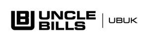

Trade Mark Journal No.2026/009 27 February 2026
UK00004334457 3 February 2026 (35)

- Class 35
- Online retail store services; on-line retail store services; retail services provided by online department stores; retail services provided by on-line department stores; retail services for online products via the web; retail services provided by convenience stores; retail services provided by hypermarkets; on-line wholesale or retail store services; on-line wholesale and retail store services; online wholesale or retail store services; online wholesale and retail store services; online wholesale store services; wholesale and retail store services; wholesale or retail store services; wholesale store services; wholesale ordering services; on-line wholesale store services; retail discount store services; retail services provided by discount stores; discount store services; price quotations for goods or services; purchasing of goods and services for other businesses; goods or services price quotations; retail services provided by department stores; retail services provided by supermarkets; retail services for products of others; retail services featuring a wide variety of consumer goods; retail or wholesale store services; retail and wholesale store services; retail services for goods of others; retail discount store services for general consumer merchandise; retail discount store services in the field of general consumer merchandise; inventorying merchandise; online retail services for goods via the web; merchandising; import-export business services; business intermediary services relating to the commercialization [wholesale] of goods; business intermediary services relating to the wholesale services for goods; advisory services relating to import-export agencies; advisory and consultancy services relating to import-export agencies; consultancy services relating to import-export agencies; procurement of goods on behalf of other businesses; business intermediary services in the field of the sales of goods; business intermediary services relating to the commercialisation [wholesale] of goods; business management of retail outlets; business management of a retail enterprise for others; business management of wholesale and retail outlets; retail store services; business management.
UBUK Limited
Representative: Wilson Gunn